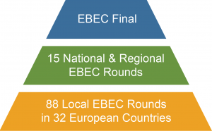
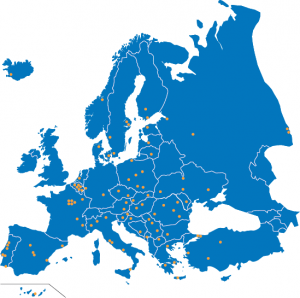

EBEC’in tarihi ilk olarak BEST üyelerinin “Kanada Mühendislik Yarışması (CEC) ” ile ilgilenmeleriyle başlar.Bu fikir daha sonra BEST’in genel kurulunda tartışılır ve hemen sonrasında üniversitelerde denenmeye başlanır. Bu yarışmalar bu günkü EBEC yapısını kazanmadan önce değişik isimler ve kategoriler altında düzenlenmiştir. BEST European Engineering Competition (BEEC) en sonunda 2008 yılında EBEC ismini almış ve son şeklini almıştır. En başında bulunan 4 yarışma kategorisi; Takım tasarımı, münazara, vaka analizi ve müzakere, geçen yıllarla gelen deneyimlerle beraber değişmiştir. Şu anda takım tasarımı ve vaka analizi EBEC piramidinin resmi iki kategorisidir.
EBEC, “EBEC piramidi” şeklinde tasarlanmıştır ve yıl boyunca düzenlenen 3 ayaktan oluşur:
– Yerel ayaklar, EBEC’in tüm üniversitelerden öğrencilerin katıldığı ilk ayağıdır. Tüm yerel ayaklar Yerel BEST Grupları (LBG) tarafından düzenlenir. EBEC’in gittikçe popülerleşmesiyle beraber her geçen sene katılan yarışmacı sayısı da artmaktadır.
– Ulusal/Bölgesel ayaklar ise EBEC’n ikinci ayağını oluşturur. Yerel ayakların kazananları bir sonraki seviye olan bu yarışmalara katılma hakkı kazanırlar. Her yıl 600’den fazla yarışmacı yarışmanının ikinci ayağında Final ayağına katılmak için yarışırlar.
– Tüm düzenlenen bu yarışmalardan sonra, yarışmacılar EBEC’in son ayağı olan final ayağında yarışırlar. 15 ulusal ve bölgesel ayakların birincisi olan yarışmacılar, 4 günü yarışma günü olan 9 günlük bu etkinlikte, derslerde öğrendikleri tüm mühendislik yaklaşımlarını limitli zaman ve olanaklar altında pratiğe dökme şansı yakalarlar.